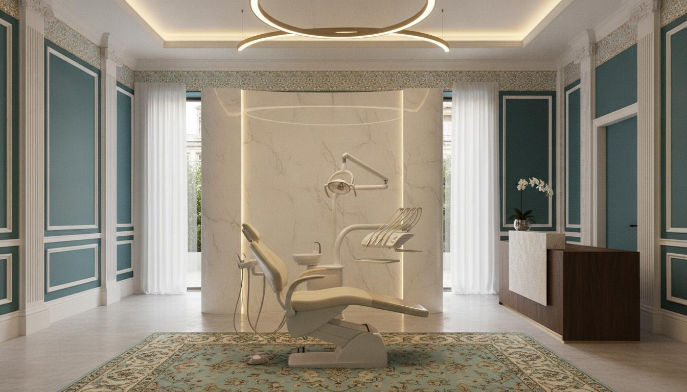

✦ دندانپزشکی مدرن، شفاف و انسانمحور
مسیر درمان را واضحتر، امنتر و هوشمندتر ببینید
از شناخت خدمت و مقایسه گزینهها تا آمادگی برای مراجعه و پیگیری؛ هر بخش طوری طراحی شده که اطلاعات معتبر را بدون وعده نتیجه قطعی یا تشخیص آنلاین در دسترس شما بگذارد.

محتوای قابل ممیزیمنابع و سیاست بازبینی
Privacy by designبدون ارسال مخفی اطلاعات
PWAقابل نصب روی موبایل
خدمات
همه خدماتاز سؤال تا تصمیم آگاهانه
مسیرهای مستقل برای درمانهای پرتقاضا با توضیح هدف، محدودیت، مراحل و سؤالهای مهم قبل از تصمیم.
Truth Layer
هر چیزی که تأیید نشده، بهعنوان Fact نمایش داده نمیشود
تلفن، آدرس دقیق، ساعت کاری، قیمت، بیمه، تجهیزات، Review و قابلیتهای عملیاتی فقط پس از تأیید مالک و اتصال واقعی Provider فعال میشوند.
Smart Patient Journey
پنج مرحله، یک مسیر قابل فهم
شناخت نیاز
جستوجو و راهنماهای آموزشی.
مقایسه
ابزار مقایسه بدون انتخاب درمان به جای پزشک.
درخواست نوبت
فرم امن؛ ارسال نهایی فقط بعد از اتصال backend.
مراجعه
تصمیم بالینی پس از معاینه.
پیگیری
My Mina پس از اتصال حساب بیمار.